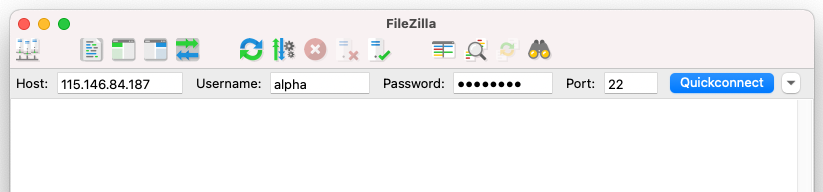

Introduction to Unix¶
Anticipated workshop duration when delivered to a group of participants is 3 hours.
For queries relating to this workshop, contact Melbourne Bioinformatics (bioinformatics-training@unimelb.edu.au).
Find out when we are next running this training as an in-person workshop, by visiting the Melbourne Bioinformaitcs Eventbrite page.
Overview¶
Topic¶
- Genomics
- Transcriptomics
- Proteomics
- Metabolomics
- Statistics and visualisation
- Structural Modelling
- Basic skills
Skill level¶
- Beginner
- Intermediate
- Advanced
This workshop is designed for participants with little or no command-line knowledge.
Description¶
A hands-on workshop covering the basics of the Unix command line interface.
Knowledge of the Unix operating system is fundamental to the use of many popular bioinformatics command-line tools. Whether you choose to run your analyses locally or on a high-performance computing system, knowing your way around a command-line interface is highly valuable. This workshop will introduce you to Unix concepts by way of a series of hands-on exercises.
Completion of this workshop will provide the background knowledge required for several Melbourne Bioinformatics workshops that require command-line skills.
Tools: Standard Unix commands, FileZilla
Topic overview:
Section 1: Getting started
Section 2: Exploring your current directory
Section 3: Making and changing directories
Section 4: Viewing and manipulating files
Section 5: Removing files and directories
Section 6: Searching files
Section 7: Putting it all together
Section 8: Transferring files
Learning Objectives¶
At the end of this introductory workshop, you will:
- Access a Unix machine either locally or remotely
- Navigate the file system
- Organise your files into directories
- Change file permissions to improve security and safety
- Move and copy files between directories
- Safely remove files
- Perform searches within files
- Combine commands using pipes
- Transfer files between a local and remote machine
Tutorial layout¶
- There is a
Table of contentson the right-hand side that can be used to easily navigate through the tutorial by clicking the relevant section.
These grey coloured boxes are code blocks. The rectangular boxes in the top
right-hand corner of this code block/grey box can be used to copy the code to
the clipboard.
Coloured boxes like these with > on the far right-hand side, can be clicked to reveal the contents.
REVEALED!
Attention: Pay attention to the information in these boxes.
Important information, hints and tips.
Requirements and preparation¶
Important
Attendees are required to bring their own laptop computers.
At least one week before the workshop, participants should install the software specified below. This should provide sufficient time for participants to liaise with their own IT support should they encounter any IT problems.
Required Software¶
- For information about required software, click here.
Required Data¶
- No additional data need to be downloaded for the live delivery workshop.
- Instructions for data download for independent completion of this workshop are included in Section 1.
Mode of Delivery¶
This workshop will be run on a Nectar Instance. An “Instance” is Nectar terminology for a virtual machine running on the Nectar Cloud OpenStack infrastructure. An “Instance” runs on a “compute node”; i.e. a physical computer populated with processor chips, memory chips and so on.
You will be given an individual IP address and password to log on to using the SSH client tool on your computer (Terminal on Mac or PuTTY on Windows).
Should you wish to complete this workshop independently, you can do so locally (for Mac and LINUX users) or via binder (for Windows users).
Slides and PDF instructions¶
The slides presented during this workshop are available here: PDF / PPTX.
A printer-friendly PDF version of these workshop instructions is available here.
Author Information¶
Written by: Steven Morgan Melbourne Bioinformatics, University of Melbourne
Created/Reviewed: November 2022
A previous introductory Unix workshop is archived here.
Background¶
Before we begin the hands-on part of this workshop, we will first give a short presentation to introduce some important Unix concepts. The slides are available here: PDF / PPTX
Section 1: Getting started¶
In this section, we will learn how to connect to a Unix computer via a program called ssh and run a few basic commands.
Logging in connects your local computer (e.g. laptop) to a remote machine, and allows you to type commands into the Unix prompt. The commands are run on the remote machine, and the results are displayed on your local screen.
You will be allocated a training account for the duration of the workshop. Your username and password will be supplied at the start of the workshop.
We are connecting to a remote computer today so that everyone has an identical environment, regardless of the specifications of your local computer. This connection process is similar to how you would connect to a high-performance computing (HPC) system such as Spartan at The University of Melbourne.
I’m not attending the live workshop. Can I complete the workshop independently?
Yes you can, although the remote machines are only provided for the live workshop participants.
Follow the instructions for your operating system, then head down to the hands-on section.
Mac Users
Download the zipped file available at this Zenodo address. We will refer to these data later in the workshop.
Unzip the file by double clicking it in a Finder window.
Open the Terminal app (it comes preinstalled on every Mac). You can find it via a Spotlight Search or via the Launchpad.
In the Terminal, you should see a blinking cursor. Type the following command and replace the word PATH_TO_DIRECTORY with the path to the location of your unzipped folder (or directory). One easy way to find the correct path is to view the directory in the Finder and enable the path bar (View > Show path bar). You can then drag the correct path from the bar at the bottom of the Finder window into the Terminal.
Use the following command to confirm that you have set the correct working directory.
If the output of this command ends in /unix_intro_data, well done! Now continue with the hands-on section.
Windows Users
We will be using a service called binder, which builds a Docker image from a specified repository. This will allow you to run Unix commands in a live environment.
Access the binder via your web browser.
Be patient, it can take a few minutes to set up your environment.
Once your binder has launched, select Terminal from the bottom left-hand corner of the main page.
In the Terminal, you should see a blinking cursor. You can now continue with the hands-on section.
Connect to a Unix computer¶
Follow the instructions here to connect to the remote machine
Windows users
Windows users will need to download a terminal emulator such as PuTTY (free and open-source).
Hands-on¶
1.1 Run some commands
Once you’ve logged in, run the following commands and see what they do.
Type each command in and hit Enter/Return. Once the previous command has completed, a new prompt indicates that it’s ready for the next command to be entered.
Answer
whoami: displays your username (i.e. the person currently logged in).date: displays the current date and time.cal: displays a calendar.
1.2 Try out some flags
Many Unix commands accept arguments (sometimes called flags) which enable/disable specific features. For example, you can ask the date command to produce its output in a different format.
It is not uncommon for a command to accept many different arguments, and, in most cases, more than one argument can be supplied at the same time. Arguments are separated by one or more space characters and they are usually case sensitive.
1.3 Consult the manual pages
If every Unix command has so many options, how you find out what they are and what
they do? Thankfully, every Unix command has an associated manual that you can usually
access by using the man command.
Try accessing the manual pages for the commands we have used so far. Can you figure out what day of the week your 100th birthday will be?
binder users
If you are running this workshop in a binder, manual pages may not be accessible via the man command.
Try an internet search for your desired command followed by manual unix instead.
When you are using the man command, use the up and down arrows to scroll, or press q to quit.
The man command is actually using another Unix program, a text viewer called less, which we’ll
come to later on.
Section 2: Exploring your current directory¶
In this section, we will learn how to “look” at the file system and further expand our repertoire of Unix commands.
The machines provided have been set up with some files for us to take a look at.
Where am I?¶
There may be many hundreds of directories on any Unix machine, so how do you know
which one you are in? The command pwd will Print the Working Directory.
If you ever get lost in the file system, remember the pwd command. Try it out.
Many bioinformatics tools require paths as input. Check your paths with pwd before you submit a job to a job scheduler.
List available files and directories¶
What about looking at the contents of a directory? For that, we use the ls command (short for ‘list’).
Hands-on¶
2.1 Reveal more information
Run ls with the long flag to get more information about the contents of the directory.
How did the output change?
Answer
The long flag means that each file or directory is placed on its own line. Extra information is also included.
drwxr-xr-x 2 alpha alpha 4.0K Sep 8 23:28 samples
\--------/ ^ \--------/ \-----/ \----/ \----------/ \-----/
permission | username group size date name
/---^---\
linkcount
- permissions: 4 parts, file type, user perms, group perms and other perms
- object type: 1 character, d = directory and - = regular file
- user permissions: 3 characters, r = read, w = write, x = execute and - no permission
- group permissions: same as user except for users within the owner group
- other permissions: same as user except for users that are not in either user or group
- username: user who owns this object
- group: group who owns this object
- size: number of bytes this object takes to store on disk
- date: date and time when this object was last edited
- name: name of the object
- linkcount: number of links this object has in the file system (safe to ignore)
2.2 Upgrade your ls
ls is a command you’re likely to use a lot! Why not find a combination of flags you like.
What does this combination of flags do?
Answer
The command above returns the contents of the current directory in long form (-l), sorted in reverse (-r) order of their last edit (-t), with file sizes shown in more convenient units (-h).
2.3 Compare files
samples is a directory; you can tell by the leading ‘d’ in the long-form ls output.
ls can be used to list the content of other directories, not just the current one.
The wc (for Word Count) command prints the number of lines, words, and bytes in a file.
Which of the 3 FASTQ files has the most lines?
Hint
wc can accept multiple input files with spaces between them.
Answer
sample_c.FASTQ has the most lines.
Section 3: Making and changing directories¶
In this section, we will learn how to change the current directory and create entirely new ones.
Create a new directory¶
To make a new directory, we use the mkdir command, supplying a sensible directory name.
Did that work?
Some commands (including mkdir) do not display a message after they have been executed. You can check that your mkdir command worked with ls.
Change working directory¶
Let’s change our current working directory to the newly created one with the command cd (for Change Directory).
Note that cd can also take the full path as input (the long version that you can see in the pwd output). What we supplied above is called a relative path.
Hands-on¶
3.1 Create nested directories
It can be very useful to organise your directories into hierarchies. Try creating a new directory inside my_directory. Then create another new directory inside that one.
Change your working directory to the innermost directory.
3.2 Change directory with ..
Often, it is useful to go ‘upwards’ one level in the directory structure. Two dots .. are used in Unix to refer to the parent directory of wherever you are. All directories (besides the root level) have a parent that can be accessed in this way.
A single dot . is used to refer to the current directory (often useful when running bioinformatics tools).
Try using .. to change your directory.
What about ../..? What does that represent?
Hint
Set your working directory back to your innermost directory first.
Answer
../.. refers to the parent of the parent directory.
../../.. refers to the parent of the parent of the parent directory.
And so on…
3.3 Save time with tab completion
One great Unix you can start using right away is that you can tab complete the names of files, directories and commands.
Just type enough characters to uniquely identify the name of a file, directory or command, press tab and Unix will do the rest.
If pressing tab doesn’t do anything, then you have not typed enough unique characters. In this case, pressing tab twice will show you all of the possible completions.
Try using tab completion to complete directory names as you change directories with cd.
Think of all the saved keystrokes!
How can I save more time?
Another great time-saver is that Unix stores a list of all of the previous commands that you have executed in each session. Access this list by using the up and down arrows.
So, if you type a long command but make a mistake, press the up arrow and then you can use the left and right arrows to move the cursor in order to make an edit.
You could also try the history command to print a list of your previous commands.
Section 4: Viewing and manipulating files¶
In this section we will focus on files; how to view them, how to copy them, how to move them, how to rename them and how to change their permissions.
View a file¶
We’ve covered finding the locations, sizes and lengths of files, but how do we look inside them?
The less command allows us to view (but not edit) text-based files. The -S flag sets the line folding to off.
This is particularly useful when you have very long lines (like our FASTQ files).
No such file or directory
If you see this error message, the most likely reason is that you are not in the correct directory.
Use pwd, cd and ls to find your way to the right place.
What if my files are compressed?
If a file is in a compressed format, you will need to decompress it first before you view it with less.
For example, the gunzip command will decompress a fastq.gz file.
Alternatively, you can view the contents of an uncompressed file by printing it to the screen with the command zcat.
When you are using less, you can move forward or backwards one line at a time
using the arrow keys. To quit, press q.
For long files, it can be inconvenient to view the whole thing when only a peek at a few lines or just the header information is enough.
The command head prints the first 10 lines of a file to the screen.
Equivalently, we have the tail command, that does the same for the last lines of a file.
Both head and tail have an option to change the number of lines displayed.
Copy, move or rename a file¶
To make a copy of a file, all you need to do is supply the name of the file and a name for the copy to the cp command.
You can check to see the new file using ls.
Moving a file from one directory to another follows the same basic command format shown below.
Renaming a file actually uses the mv command too.
Change file permissions¶
File and directory permissions determine what actions users can perform.
We can see these permissions using the long-form ls output.
The file permission symbolic notation works as follows:
The first character determines the type of object (d for directory, - for a regular file).
The remaining nine characters are in three triads.
| Three permission triads | |
|---|---|
| first triad: | what the owner can do |
| second triad: | what the group members can do |
| third triad: | what other users can do |
| In each triad | ||
|---|---|---|
| first character: | r | readable |
| second character: | w | writable |
| third character: | x | executable |
Can I see an example?
For the permission string drwxr-xr-x
The d means it is a directory.
The rwx means that the owner of the directory
(your user account) can read, write and execute the directory. Execute permission on a directory means that you
can cd into the directory.
The r-x means that anyone in the user group can read and execute the directory.
The second r-x means that other users on the system can read and execute the directory.
To change permissions, use the chmod command (for change mode). The owner of a file can change the permissions for user (u), group (g), or others (o) by adding (+) or subtracting (-) the read (r), write (w), and execute (x) permissions.
To add write permission for others for a file, the following command would be used:
Hands-on¶
4.1 Move files
Move sample_1.fastq and sample_2.fastq into the samples directory.
Hint
Move multiple files at once by using the wildcard character *.
The * symbol is a Unix wildcard that can stand for any string.
Hence sam* will refer to any file in your current directory that begins with sam.
4.2 Rename a file
Rename sample_c.fastq to sample_3.fastq
After 4.1 and 4.2 you should have a samples directory with 3 files that follow the same naming convention.
4.3 Change file permissions
Remove all users write permission to the FASTQ files in the samples directory. This will prevent you from accidentally overwriting or erasing these files.
Hint
The change a permission for the user (u), group (g), and others (o) all at once, use a for all.
Section 5: Removing files and directories¶
In this section we’ll cover how to safely remove files and directories that you no longer need.
Remove directories¶
The mkdir command that we used earlier has an analogue for removing directories called rmdir.
Helpfully, rmdir will only remove an empty directory (so we don’t accidentally remove important files).
Remove files¶
To remove files, we have to use the rm (remove) command.
Please read this section VERY carefully!
Accidental misuse of the rm command can lead to huge problems!
If you delete something with rm, you will not get it back!
It is possible to delete everything in file system (all directories and subdirectories) with rm.
Let’s repeat that last part again: It is possible to delete every file you have ever created
with the rm command.
Luckily, there is a way of making rm a little bit safer. We can use it
with the -i flag so that you will be asked for confirmation before deleting anything.
Can I use a wildcard character with these commands too?
You can use wildcard characters with any Unix command.
However, using wildcards with the rm command is particularly dangerous (we encourage avoiding it altogether).
Hands-on¶
5.1 Change rm behaviour
Usually rm does not display a message once it has run.
Instead using a flag, rm will use verbose mode, where it will print the name of each file that has been deleted.
What flag enables verbose mode?
Answer
-v engages verbose mode.
5.2 Remove file
Remove the copied file you created in section 4. You can also remove any additional copies you may have made.
5.3 Remove directories
Remove the directories you created in section 3.
Do not remove the samples directory.
Section 6: Searching files¶
In this section we’ll cover how to search within files for matches to a given pattern.
Grep for matches¶
We can use the command grep to search within files. You may also hear grep used as a verb; to grep for the right line in a file.
The following examples show how you can use grep’s command-line options to:
- show lines that match a specified pattern
- ignore case when matching (-i)
- only match whole words (-w)
- show lines that don’t match a pattern (-v)
- use wildcard characters and other patterns to allow for alternatives
- colours the matched text for easy visualisation (- -colour)
Regular expressions (regex) are used to define search patterns. Some useful regex characters:
- ^ The beginning of a text line
- $ The end of a text line
- . Any single character
The following command shows all of the lines in the file that contain the string CATCAT
Hands-on¶
6.1 Extract ID lines
Each read in a FASTQ file has an associated sequence ID line.
Identify which is the ID line from the following head output.
Use grep to print all of the ID line from sample_1.fastq.
6.2 Find matching entries
With a regular grep search, the line containing the matching term is printed. It can be useful to also print lines before or after the matching lines.
With -B (for before) and -A (for after), you can specify the number of lines to display.
Display the full FASTQ entry for each sequence that contains the sequence CATCAT in sample_1.fastq.
6.3 Search for a motif
Display the sequences in sample_1.fastq that contain the motif CATNNT where N is any nucleotide.
Section 7: Putting it all together¶
In this section we will cover a few more advanced Unix concepts that allow us to bring together some of the commands we have learned so far.
Combine commands with pipes¶
One of the most powerful features of Unix is that you can send the output from one command directly into the input of any other command.
We do this by using a pipe that is represented by the | character. Think of a pipe as a connection between two Unix commands.
The first part of the command is the same grep search from 6.3.
The grep output is sent through a pipe to wc, where the -l option counts the number of lines. So as a whole, this command counts the number of sequences that contain a match to the motif CATNNT.
Redirect output to a file¶
It can be very useful to direct output into a new file, rather than simply printing it to the screen.
This file redirection can be done with the > symbol.
The command above sent the output of the whoami command to a file called user.txt. Notice that there was no output on the screen. You can check the contents of user.txt with less.
Warning
Be careful when using file redirection (>); it will overwrite any existing file of the same name.
We can also use the >> operator to append output to the end of an existing file.
You should see that your user.txt file now contains the output of the date command under the original user line.
Hands-on¶
7.1 Use a pipe
Display the ID lines from the first 10 entries in sample_1.fastq using a pipe.
7.2 Direct output to a file
Use your command from above but redirect the output to a file. Choose a sensible name for your file.
7.3 Create a new FASTQ file
Create a new FASTQ file containing the final 3 reads in each of the three FASTQ files.
Section 8: Transferring files¶
In this section we will cover how to transfer files between a local and a remote machine using FileZilla.
Section 8: for in-person workshop participants
Section 8 applies only to in-person workshop participants.
When working on a remote machine like an HPC system, transferring data (in both directions!) is a common task. FileZilla provides a useful interface for these transfers.
Transfer files with Filezilla¶
Open FileZilla on your local computer. At the top of the window, enter the following information in the boxes as shown in the image below.
| Field | Enter the below information |
|---|---|
Host: |
IP adress from provided spreadsheet |
Username: |
Username from provided spreadsheet |
Password |
Password from provided spreadsheet |
Port |
22 |

Select Quickconnect to establish a connection.
Now you can now drag and drop files or whole directories to move them between a local and a remote machine.
The provided Nectar instances will be turned off shortly after the completion of the workshop
If you would like to save a copy of the files you have been working on, do that now.
Finished¶
Well done, you learnt a lot over the last 8 sections; it’s a lot to take in!
From here you should be comfortable around the Unix command line and be ready to complete other workshops based on the command line here at Melbourne Bioinformatics.
You will no-doubt forget a lot of what you learnt here so we encourage you to save a link to this workshop for later reference.
Table of commands used¶
| Command | Description |
|---|---|
whoami |
print current user name |
date |
system date and time |
cal |
calendar |
man |
manual page |
pwd |
print working directory |
ls |
list contents |
wc |
word count |
mkdir |
make directory |
cd |
change directory |
history |
print list of previous commands |
less |
view file |
head |
show first lines of file |
tail |
show last lines of file |
cp |
copy files/directories |
mv |
move files/directories |
chmod |
change permissions |
rmdir |
remove empty directory |
rm |
remove file |
grep |
search for a pattern |
gzip |
gzip a file |
gunzip |
decompress a gzipped file |
zcat |
view contents of a compressed file |
Additional Resources¶
This workshop is just the tip of the Unix iceberg! There is lots more to learn out there. Below are some reseources that will help with further learning.
- The HPC workshops run by Research Computing Services (University of Melbourne researchers only) are a great intro to using a command-line interface to access a HPC system.
- This tutorial is a detailed intro to Unix programming by A/Prof Bernie Pope.